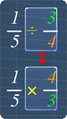
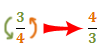
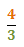
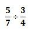
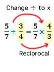
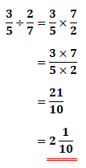

Dividing Fractions
Lesson Objective
In this lesson, we will use some examples to
explain the basics behind dividing fractions.
About This Lesson
It is quite easy to divide fractions after
we learned how to multiply fractions. This is
because dividing fractions is closely related to multiplying
fractions.
This relation lies in the step needed to convert the division to multiplication. The picture on the right will give you a rough idea on this.
The study tips and math video below will explain more.
This relation lies in the step needed to convert the division to multiplication. The picture on the right will give you a rough idea on this.
The study tips and math video below will explain more.

Tip #1 - Reciprocal of a fraction
We need to know how to find the reciprocal of a fraction before we can proceed. The example below shows how:
-
Find the reciprocal of the
following fraction:
-
To do so, we simply swap the numerator
and denominator:
-
Hence, the reciprocal of 3/4 is:
Tip #2 - Dividing Fractions
The following example shows the steps required
to divide fractions:

-
First, we change the division to
multiplication. Then, we change the
divisor 3/4, to its reciprocal, 4/3.
 -
After doing so, we can continue by
multiplying these fractions:
Math Video Transcript
Multiple Choice Questions (MCQ)
Now, let's try some MCQ questions to understand
this lesson better.
You can start by going through the series of questions on Dividing Fractions or pick your choice of question below.
You can start by going through the series of questions on Dividing Fractions or pick your choice of question below.
- Question 1 on the basics